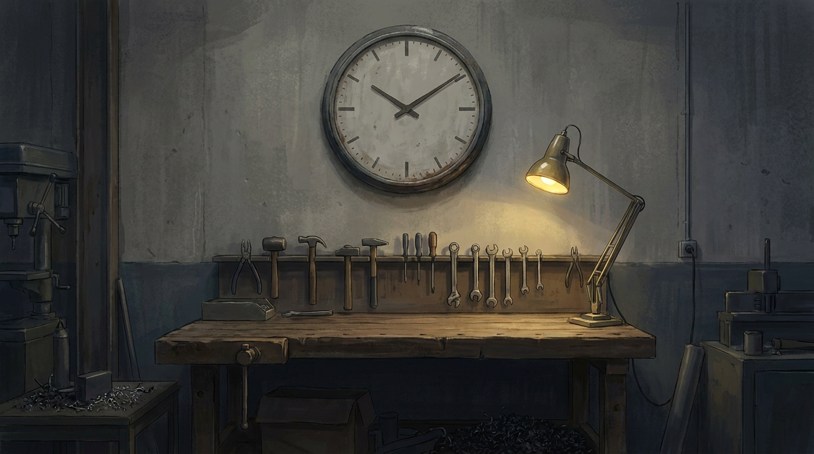
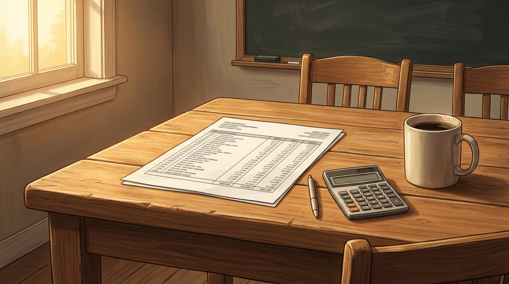
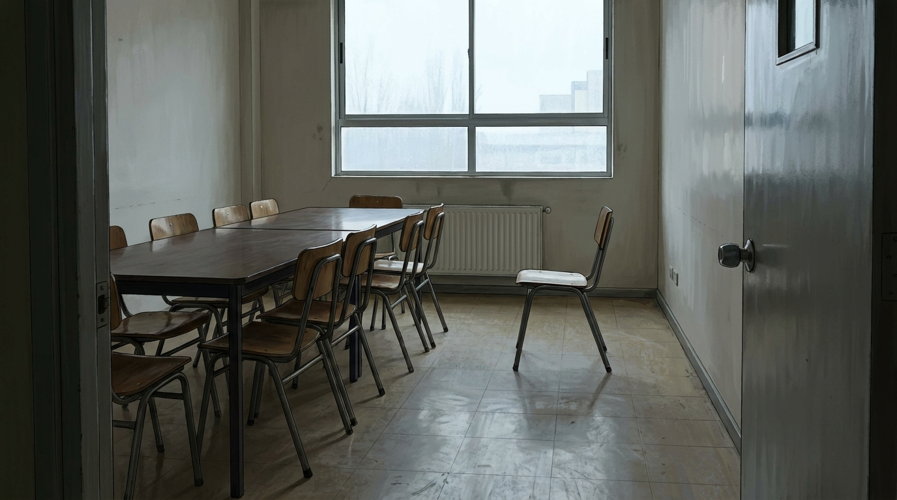
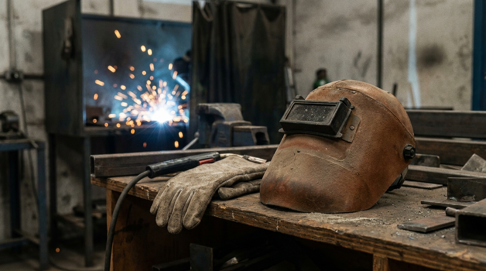
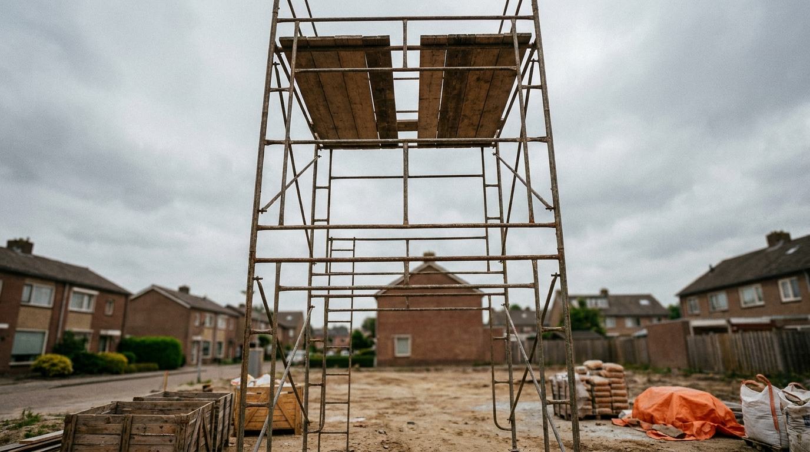

Derechos, trato digno
y seguridad en el trabajo
Cinco situaciones que le pasan de verdad a quien recién entra a trabajar. Hoy hay que decidir qué hacer, y fundamentarlo con lo que dice la ley.
Objetivo de la clase
Normas de la clase
Hoy el celular y la tablet son herramientas de trabajo. Mientras sirvan para la clase, se quedan sobre la mesa. Es la misma regla que vas a encontrar en cualquier trabajo.
El caso de Rodrigo
Dura 2 minutos. Es una situación inventada, pero cada cosa que le pasa a Rodrigo le pasa de verdad a alguien que recién entra a trabajar.
- De todo lo que le pasa a Rodrigo, ¿qué te parece lo más grave? ¿Por qué eso y no otra cosa?
- Si te pasara a ti, ¿a quién le preguntarías?
- ¿Qué diferencia hay entre decir «me trataron mal» y poder demostrarlo?
Conceptos clave
No se copia. Se leen en voz alta, por turnos, y quedan en la pantalla toda la clase.
| Hecho | Algo que ocurrió y se puede comprobar. «El lunes trabajé hasta las 22:00» es un hecho. |
| Opinión | Lo que a alguien le parece. «Mi jefe es injusto» es una opinión. No sirve como prueba. |
| Evidencia | Lo que demuestra el hecho: un mensaje, una liquidación, un registro de asistencia, un testigo. |
| Jornada extraordinaria | Las horas trabajadas por sobre la jornada pactada. Tienen reglas propias de límite, pacto y pago. |
| Descuento autorizado | Lo que se resta del sueldo. Algunos los fija la ley y otros requieren que tú los autorices por escrito. |
| Trato digno | Derecho a trabajar sin humillación, hostigamiento ni violencia. Existe un procedimiento formal cuando se vulnera. |
| Elementos de protección | Casco, guantes, careta, calzado y todo lo que la tarea exija para no lesionarse. |
| Riesgo grave e inminente | Un peligro serio que puede ocurrir en cualquier momento. Cambia lo que puedes hacer en ese instante. |
| Fuente oficial | El organismo que puede confirmar la regla. Aquí es la Dirección del Trabajo, www.dt.gob.cl |
Un caso resuelto juntos
- Identifico el problemaTrabaja 50 horas a la semana y su contrato dice 42. Hay 8 horas de diferencia.
- Separo hecho de opiniónHecho: entra a las 8:00, sale a las 18:00 y el contrato dice 42. Opinión: «si reclamas te echan». Lo segundo no se puede probar.
- Consulto la fuente oficialBusco en dt.gob.cl qué dice sobre jornada extraordinaria: cuántas horas se permiten, si hay que pactarlas por escrito y cómo se pagan.
- Propongo una ruta seguraPrimero reúno la evidencia: contrato y registro de asistencia. Después pido por escrito. Recién al final, si no se corrige, consulto en la Dirección del Trabajo.
Cinco estaciones · cómo se trabaja
En parejas. Cada estación dura 9 minutos y después avanzamos juntos a la siguiente. Al terminar, la matriz tiene sus cinco filas.
- Lees el caso completoEstá en la pantalla y también en tu tablet o teléfono.
- Aplican los cuatro pasosProblema, hecho contra opinión, fuente oficial y ruta de actuación.
- Buscan la regla ustedesNo se las damos. Está en dt.gob.cl. El objetivo de hoy es fundamentar con la fuente, no repetir lo que diga el profesor.
- Escriben una fila por estaciónDiscuten de a dos, pero cada uno escribe en su propio cuaderno: el timbre es individual.
| N° | Situación | Derecho o riesgo | Evidencia que reuniría | Acción que propongo |
|---|---|---|---|---|
| 1 | ||||
| … 5 |
Las horas que no aparecen

- ¿Cuántas horas extraordinarias se pueden trabajar y bajo qué condiciones?
- ¿Tienen que quedar pactadas por escrito?
- ¿Cómo se pagan, y qué pasa con sus cotizaciones si esas horas no se registran?
Nicolás entró hace dos meses a un taller de estructuras metálicas. Le gusta el trabajo y aprende rápido.
Desde la tercera semana le piden quedarse dos horas más, tres veces por semana. Nunca se lo avisan con anticipación: se lo dicen a las cinco de la tarde, cuando ya está guardando sus cosas.
El pago llega aparte, en efectivo, dentro de un sobre. No aparece en su liquidación ni en ningún registro. Su jefe se lo explicó así: «Es mejor para los dos. A ti no te descuentan nada y a mí no me complica el papeleo».
Un compañero más antiguo le contó que él tuvo el mismo arreglo durante dos años. Cuando necesitó una licencia médica se dio cuenta de que le convenía bastante menos de lo que pensaba.
La liquidación que no se entiende

- ¿Qué descuentos son obligatorios por ley y cuáles necesitan tu autorización escrita?
- ¿Puede el empleador descontar algo que tú no firmaste?
- ¿Qué revisas primero en una liquidación para darte cuenta de algo así?
A Fernanda le llegó su segunda liquidación de sueldo. Revisó el total y le pareció más bajo de lo que esperaba.
En la columna de descuentos encontró tres que conocía: pensión, salud y seguro de cesantía. Pero había un cuarto, con un nombre que no reconocía y un monto de treinta y ocho mil pesos.
Fue a preguntar a la oficina. La respuesta fue: «Ese lo tienen todos, es del convenio de la empresa, no te preocupes».
Fernanda no recuerda haber firmado ningún convenio. Cuando entró le pasaron varios papeles juntos y los firmó todos ese mismo día, sin alcanzar a leerlos con calma.
Cuando el trato no corresponde

- ¿Existe un procedimiento formal cuando alguien se siente hostigado en su trabajo?
- ¿Dónde se presenta y qué ocurre después de presentarlo?
- ¿Qué evidencia sirve para respaldarlo?
Ignacio trabaja en una bodega desde marzo. Su supervisor tiene la costumbre de corregir a la gente en voz alta, delante de todos.
Con Ignacio agregó algo más: imita su forma de hablar y hace bromas sobre su acento cada vez que se equivoca. Los demás se ríen. Al principio Ignacio también se reía.
Hace tres semanas empezaron los mensajes. Le escribe a las once de la noche y también los domingos. Si no responde en el momento, al otro día se lo comenta delante del equipo.
Se lo contó a un compañero y la respuesta fue: «Así es él con todos. Si reclamas vas a quedar como el complicado». Ignacio guardó capturas, pero no sabe si eso sirve de algo.
«Es rápido, hazlo así nomás»

- ¿Quién debe entregar los elementos de protección y quién los paga?
- ¿Puede el trabajador negarse a hacer la tarea sin ellos?
- ¿Qué obligación tiene la empresa de informar los riesgos de cada tarea?
Camilo está en su tercer mes. Le pidieron hacer un punto de soldadura en una pieza que ya estaba montada.
La careta quedó en el otro taller, a unos cinco minutos caminando. Cuando dijo que iba a buscarla, su jefe de turno le respondió: «No, si son dos segundos. Cierra los ojos y listo».
Camilo lo hizo. Esa noche le ardían los ojos y le costó dormir.
Es la tercera vez en la semana que le piden trabajar sin el equipo que corresponde. La primera fue sin guantes, moviendo material caliente. La segunda, sin lentes, esmerilando. Nadie le ha explicado nunca qué riesgos tiene cada tarea.
El andamio

- ¿Qué es un riesgo grave e inminente?
- ¿Qué puede hacer un trabajador en ese momento, sin esperar autorización?
- ¿Queda protegido si se niega, o puede ser despedido por eso?
Sebastián llegó a la obra a las ocho. El andamio del segundo nivel quedó armado el viernes por otro turno.
Al mirarlo desde abajo se da cuenta de que falta una tabla en la plataforma superior, y que uno de los apoyos está sobre un tablón suelto en vez de apoyarse en suelo firme.
Lo comentó. El maestro a cargo le contestó que hay que entregar hoy, que el andamio «lleva así desde el viernes y no le ha pasado nada a nadie», y que suba.
Sebastián está a prueba. Le quedan tres semanas para que decidan si lo contratan, y cree que negarse puede pesar en esa decisión. El resto del equipo lo está esperando arriba.
Plenario
Una pareja por estación. Dos minutos cada una, y responden los dos.
| 1 | Lean su fila completa, en orden: situación, derecho, evidencia y acción. |
|---|---|
| 2 | ¿Qué encontraron en dt.gob.cl? Digan la regla con sus palabras. |
| 3 | ¿Cuál fue el hecho y cuál la opinión en su caso? |
| 4 | Si no tuvieran la evidencia que nombraron, ¿su acción seguiría sirviendo? |
| 5 | ¿En algo no estuvieron de acuerdo ustedes dos? Cuenten en qué. |
Cierre y timbre
El profesor pasa por los puestos, revisa y timbra. Se trabajó en pareja, pero el timbre es individual: cada cuaderno tiene que tener su matriz.
| Se revisa | Qué se acepta |
|---|---|
| El objetivo copiado | Completo y textual. |
| Las tres respuestas del video | Con una idea propia, aunque sean breves. |
| La matriz con sus cinco filas | Las cinco filas con las cuatro columnas escritas. |
| Una fuente citada de dt.gob.cl | Basta con decir qué buscaste y qué encontraste. |
Fuente oficial: Dirección del Trabajo, www.dt.gob.cl. El caso de Rodrigo y los cinco casos de las estaciones son situaciones construidas para esta clase y no corresponden a personas ni empresas reales. Las imágenes y el video se generaron con inteligencia artificial.